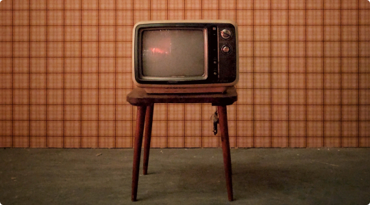

Creep it real. Check out the best of all time.
1920
2017
2017
1935
1933
1922
1960
2014
1920
1931
Looking for more?
Jan 1, 2020
Not actually my TV
I like horror movies. I like them so much I’ve seen too many to remember their titles, even the good ones. I remember watching Nightmare On Elm Street when I was around 8 years old, probably not the best parenting choice. They’re my go-to for background noise when I’m not actually paying attention to the TV, with the exception of music. What is it that has myself and so many others fascinated with this genre?
Jan 08, 2020
Your brain on Horror
Turns out horror movies have some pretty interesting affects on your brain. Some may assume these affects would be undoubtedly negative, but that’s not completely true. To your brain, what you see on screen is very real. The images you see and especially the sounds trigger the same part of your brain that’s responsible for fight-or-flight.
You get a boost of adrenaline, which in-turn increases your heart rate. The rush we experience in being scared is actually addicting and that’s why many of us keep going back for more. It’s funny to think you paid the cost of a movie ticket to feel scared and anxious, but people do this all the time. You know that you’re watching a work of fiction, yet you still get nervous, scream, and jump out of your seat.
The good news: watching horror movies burns calories! According to The Telegraph, you can burn about 184 calories just by sitting on the couch watching The Shinning. If you’re in need of a New Year’s resolution, let this be some inspiration.
Jan 15, 2020
*gasps* *shivers* *screams*
Basically, they’re cheap to make and have a better return on investment than other genres. They may not be dirt cheap, but they are certainly one of the cheapest genres out there. In 2014-2018, the median budget for a feature horror film released domestically was under 10 million. Ok, that probably sounds like a lot of money, but it’s really just a drop in a bucket for the film industry.
The horror genre is perfect for filmmakers with little to no budget. You don’t need CGI, well-known actors, or even a decent camera, talking about you found footage movies. This is also the reason they are fairly profitable. According to stephenfollows.com, "Horror hugely outperforms other genres, collecting an average of 2.3 times its production budget at the box office."